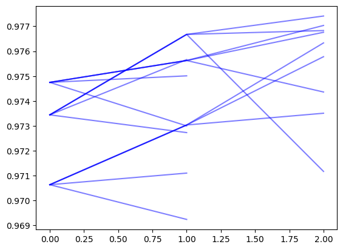

Tutorial on advanced updates, pruning and gradient queries
Overview
The previous tutorial gave an overview of the main abstractions in emb_opt for basic hill climbing. This notebook goes over some more advanced query updating strategies
/home/dmai/miniconda3/envs/emb_opt/lib/python3.9/site-packages/tqdm/auto.py:21: TqdmWarning: IProgress not found. Please update jupyter and ipywidgets. See https://ipywidgets.readthedocs.io/en/stable/user_install.html
from .autonotebook import tqdm as notebook_tqdm
Setup
To start, we’ll set up the same dataset, filter function and score function from the previous notebook
def score_embeddings(embeddings: np.ndarray, sigma: float=5.) -> np.ndarray: target_point = np.ones(embeddings.shape[1])*.75 distances = np.linalg.norm(embeddings - target_point, axis=1) / np.sqrt(embeddings.shape[1]) scores = np.exp(-0.5* (distances/sigma)**2)return scoresdef score_plugin(inputs: List[Item]) -> List[ScoreResponse]: embeddings = np.array([i.embedding for i in inputs]) scores = score_embeddings(embeddings) results = [ScoreResponse(valid=True, score=i, data=None) for i in scores]return results
def filter_plugin(inputs: List[Item]) -> List[FilterResponse]:return [FilterResponse(valid=i.data['rand']<0.9, data={'rand':i.data['rand']}) for i in inputs]
Now we want to take our batch and run a database query, filter function query, and score function query. The easiest way to do this is wrapping our various functions in their corresponding Module class. Module classes handle gathering the correct inputs from a Batch and processing the outputs.
Now we have a batch with filtered and scored items. We can verify this by iterating through query results within the batch.
for _, query_result in batch.enumerate_query_results(skip_removed=False):print(f'removed: {query_result.internal.removed}, score: {query_result.score if query_result.score elseNone}')
emb_opt supports update methods that generate a variable number of output queries. We can pass more learning rates to RLUpdate to take different step sizes based on our gradient.
This allows for a lot of flexibility in how updates are executed, but creates a problem of managing the total number of queries. If the number of queries increases by a constant multiple, the total number of queries quickly gets out of hand and inefficient. We can manage this with the Prune step
Prune Function
A Prune function exists to prune queries to control the total query number. Pruning happens after Filter and Score steps, but before the Update step. This allows us to use score information to inform which queries we prune.
We can use any prune method that corresponds to the PruneFunction data model
PruneFunction = Callable[List[Query], List[PruneResponse]]class PruneResponse(BaseModel): valid: bool# if the input `Query` item is valid (if False, the associated `Query` is removed) data: Optional[Dict] # optional dict of data associated with the prune response
# starting batch sizeprint(len(list(batch.valid_queries())))# create new batch with more queriesnew_batch = update_module(batch)print(len(list(new_batch.valid_queries())))# query, filter, scorenew_batch = data_module(new_batch)new_batch = filter_module(new_batch)new_batch = score_module(new_batch)print(len(list(new_batch.valid_queries())))# prunenew_batch = prune_module(new_batch)print(len(list(new_batch.valid_queries())))
5
20
20
5
Running with branching and pruning
Here we show running with branching and pruning. We use an RL update with several learning rates, and prune back to a single update by mean score. This allows us to converge to the top 1 result with fewer iterations
k_vals = [1, 5, 10, 50]recovered_ids =set([i['id'] for i in results])metrics = []for k in k_vals: gt_idxs =set(ground_truth[:k]['index']) percent_recovered =len(gt_idxs.intersection(recovered_ids))/k metrics.append(percent_recovered)metrics
[1.0, 0.4, 0.3, 0.12]
By plotting trajectories, we can see the branching and pruning
for final_node in search_log.query_tree.leaf_nodes(include_removed=True): mean_scores = [] current = final_nodewhile current: mean_scores.append(current.mean_score) current = current.parent plt.plot(mean_scores[::-1], color='b', alpha=0.5)

Gradient Based Queries
So far, we have used gradients to Update our queries. We can also use gradients in the query itself. We take a query embedding and project it along the score gradient, creating multiple queries.
UpdatePluginGradientWrapper takes a new query and estimates its gradient using scored items from the new query’s parent query. The gradient values are stored in the new query’s data['_score_grad'] attribute.
UpdatePluginGradientWrapper can be replaced by any custom method that assigns the gradient to the data['_score_grad'] attribute of queries. Note that the gradient is expected to point in the direction of increasing score
from emb_opt.data_source import DataPluginGradWrapperfrom emb_opt.update import UpdatePluginGradientWrapper, TopKContinuousUpdate
Here we set up a run with the gradient based query. Since we are using gradients in the query step, we will swap out the RL update (also gradient based) with top k selection
k_vals = [1, 5, 10, 50]recovered_ids =set([i['id'] for i in results])metrics = []for k in k_vals: gt_idxs =set(ground_truth[:k]['index']) percent_recovered =len(gt_idxs.intersection(recovered_ids))/k metrics.append(percent_recovered)metrics